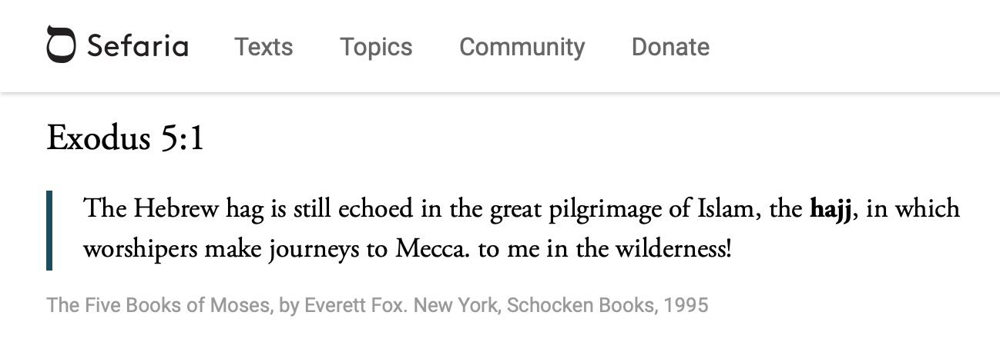
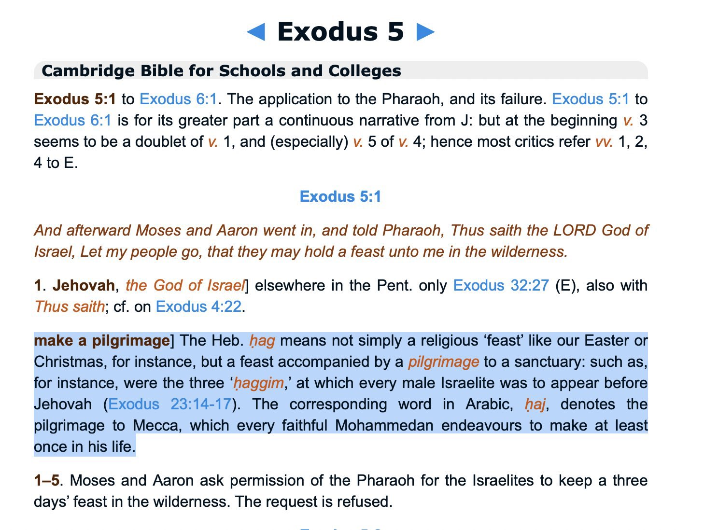
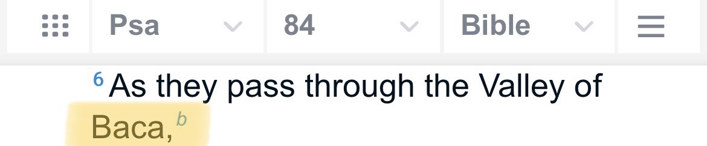

Im not claiming that hajj is in the bible but very interesting stuff below⬇️



Bacca is one of the names of Makkah, so this is an answer to those who claim it was built during the time of the prophet pbuh
Aal-E-Imran, Ayah 96
إِنَّ أَوَّلَ بَیۡتࣲ وُضِعَ لِلنَّاسِ لَلَّذِی بِبَكَّةَ مُبَارَكࣰا وَهُدࣰى لِّلۡعَـٰلَمِینَ﴿ ٩٦ ﴾
• Dr Mustafa Khattab (The Clear Quran):
Surely the first House ˹of worship˺ established for humanity is the one at Bakkah—a blessed sanctuary and a guide for ˹all˺ people.
•Tafsir ibn Kathir
Allah said,
إِنَّ أَوَّلَ بَيْتٍ وُضِعَ لِلنَّاسِ
(Verily, the first House appointed for mankind) for all people, for their acts of worship and religious rituals. They go around the House in Tawaf, pray in its vicinity and remain in its area in Itikaf.
لَلَّذِى بِبَكَّةَ
(was that at Bakkah,) meaning, the Kabah that was built by Ibrahim Al-Khalil, whose religion the Jews and Christians claim they follow. However, they do not perform Hajj to the house that Ibrahim built by Allah's command, and to which he invited the people to perform Hajj.